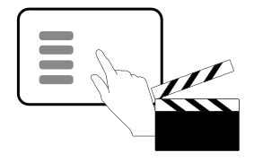
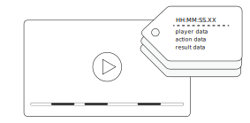
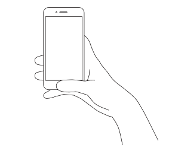
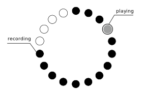
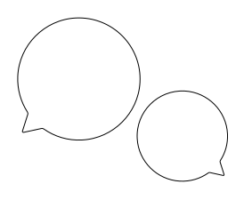

どんなスポーツでも使えるように
STEPとはタブレットで記録されたスコアブックと動画をリンクさせてダイジェスト動画を閲覧可能にするスポーツ支援システムです。
スコアブックは試合などの記録を残すためによく活用されますが、これだけでは分析を行うのには不十分です。また、撮影した動画を見れば、プレイそのものや陣形を確認するのには役に立ちますが、数時間分の試合の動画を見直すのは大変です。
そこで、記録したスコアブックのデータをもとにダイジェスト動画を作るシステムがあれば、簡単に分析が行えるのではないかと考えました。
また、どんなスポーツでも使えるように、スコアブックの記録方法をユーザーが自分で決めることも可能にしました。
開発にはMicrosoft Azureを使い、HTML,CSS,PHP,JavaScriptにてコーディングを行いました。全国高専プロコンにて最優秀賞および文部科学大臣賞を受賞しました。
スコアの記録
ビデオカメラで動画を撮影しながら、タブレットに表示されるボタンをタップしていくことでスコアの記録を行います。スコアを記録した時の時間データをもとに、スコアと動画の紐付けが可能になります。
ダイジェスト動画の生成
タブレットで記録されたスコアデータには時間、動作、評価、プレイヤーなどの情報が含まれ、それらをもとにスコアブックの作成を行います。動画にスコアをタグづけすることで、ダイジェスト動画を生成します。
システム構成
記録されたスコアデータはクラウド上のデータベースに、撮影された動画データはYouTubeにアップロードされます。これらのデータをもとにスコアブックおよびダイジェスト動画の作成を行います。
誰でも簡単に使えるように
スマートフォンやタブレットを使って、自分のフォームを簡単に確認できるスポーツ支援アプリです。
スポーツ競技において、自分の姿勢を知ることはとても重要です。しかし、動画を撮影しながら練習を繰り返すとなかなか練習に集中できません。また、分析するためのアプリなどもありますが、操作型機能で複雑なため練習中にはあまり向かないというような問題点があります。
そこで、これらの問題を解決するためにはなまるフォームの開発に取り組みました。はなまるフォームは数秒前の映像を流し続けることで自分のフォームやプレーをいつでも簡単に確認できるシステムです。
開発にはXcodeを使い、Objective-cでコーディングを行いました。全国高専プロコンにて優秀賞を受賞し、起業家甲子園への出場権を獲得しました。
フォームの確認
タブレットやスマートフォンを立てておくだけで、数秒前の自分のフォームを確認することができます。バスケットボールのレイアップシュートや、バレーボールのスパイク練習など様々な場面で自分のフォームを確認することができます。
遅延再生の実装
遅延再生にはリングバッファを用いた実装を行いました。バレーボールではスパイク練習では約10秒の遅延、ミニゲームの練習では2分程度の遅延といったように、どんな練習にも対応できるようにするため、最大３分までの遅延を実現しました。
約160人からのフィードバック
初めてのアプリ開発ということもあり、2ヶ月程度で主な機能の実装し、それからテスト→設計→開発を毎日行いました。テストでは実際に運動部で使っていただき、そこから得たフィードバックをもとに設計と開発を繰り返しました。
家族をつなぐぬいぐるみ
「かぞくぐるみ」は離れて暮らす祖父母と孫のためのテレビ電話システムです。
孫側では、祖父母と同じ動きをするぬいぐるみ型ロボットがテレビ画面の代わりに祖父母の声で喋ります。
お母さんが家事で忙しいときはぬいぐるみが一緒におままごとをしたり、家族でお出かけのときはぬいぐるみも車に乗せたり。
いろんな場面で祖父母と孫が交流でき、親が手を離せないときの手助けになるシステムです。
私は主にぬいぐるみの設計と製作を担当しました。全国高専プロコンにて優秀賞を受賞しました。さらに、Digital Youth Awardでは準グランプリを獲得し、Imagine Cup世界大会に出場しました。